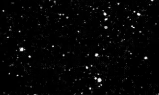
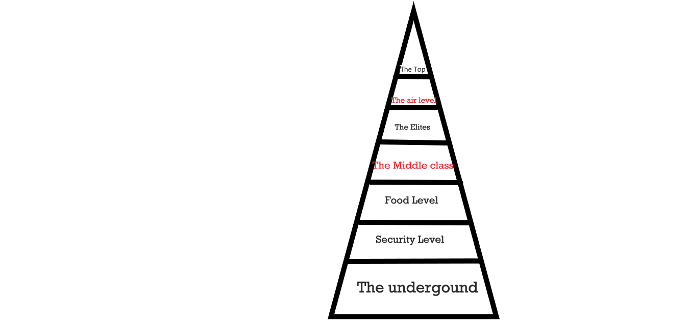

Intro
"We lived in the bottom of this world, we were not even allowed to look out. After a long time we are going to see the outside world. And now I am not going to take you this away for me, or everyone dies. And you know, what I mean by 'everyone'."
And the sound fainted with darkness.

The whole world is deserted, no one is outside. Near about everyone on the planet died because of the heat wave released by sun. It destroyed everything, every living creatures and every plants and animals. But someone predicted this a long ago, she predicted the positions of stars, and coincidently the largest star too, she knew that if she would tell this to someone or everyone they will definitely think that she is going mad. So, she decided to keep this a secret and do her best to survive this, so she made money by telling her fact in the form of stories to the world. She, made money, and she knew exactly what to do with this. So, she made an underground world, which prevented the rays from reaching the earth, it was nearly about 278,000 square kilometers in area. How did she made such a huge civilization underground?

I am pretty sure it must have been something that made her do this so quickly and at such a big scale. To build this underground tunnel, it might take a hundred years but she was barely 23 years old.
And for some reason, she made levels inside tunnels. It was divided into 7 levels,

She was a goddess of equality, but still she did this. It divided, the people and made them feel, inferior and superior amongst themselves. But she did something to reverse this. The one who were real life strugglers and poor were on the Top level and the one who were rich and popular were put into the lowest level “The Underground”.
The Air
This was the most important level, this level is source of food, water, livestock, meat and oxygen. The trees and plants were attached to the walls, upside down side by side and everywhere it’s just trees. With animal living in the dense forest. She took pipes from each level and then these pipes met here. They were again redirected back to their levels for the chain of oxygen to complete.

The Elites
The people on the top, enjoyed there life. They were happy with their families, and ones that didn’t had any family were enjoying the luxury, there were approximately 800 people there. Luxurious 50 apartments, 16 human beings in each apartment. And this was the only level that had the provision of their private ecosystem. They had trees hanging on the top, stuck to the wall. A pond and 9 with fishes in it, a bar, mall and everything that those people could never dream of.

The Middle Class
This people lived in normal flats, with a population of 15000 they struggled for food, but they at least got food twice a day, with 50 apartments and 300 human beings in each. Now, how is that possible? Every floor had 3 rooms with 10 people in each room, and total 10 floors. Not so big rooms, but they got their own room to stay. So, it was not much of a problem.

The Food Level
All the food is processed here, and supplied to different levels by ducts. And nothing much more.

Security Level
50,000 security guards, with just a tiny room to sleep and fresh over. Food provided equally and no struggle. All armed, every day standing on the same spot, prepared for war. But, what are the chances of war? There were no passages through which people from one level can go to other level, it was just ducts all over. But, still expecting the unexpected.
 The Underground
The Underground
100,000 population, living in small building, covering largest area of pyramid, struggling like rats. 1000 apartments, but just of two floors. 50 on each floor, no rooms provided. Everyone sleeps on ground. With alleys of hunger and poverty strike, some died of hunger and some died to finish other people’s hunger. Lack of plants, they tried to grow some with the food given, but it just couldn’t grow. They got water thrice a week and food once a month. They all were dying, they started with a population of 200,000 and are now left with just a 100,000.

The Top
Information- Unknown
Number of persons-1
That’s all we have. She lives here.